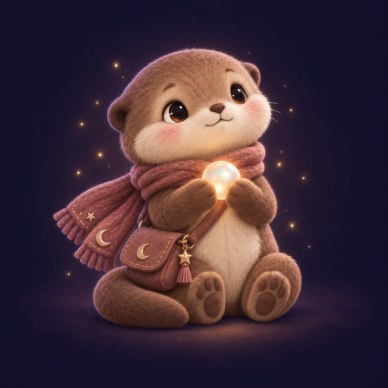
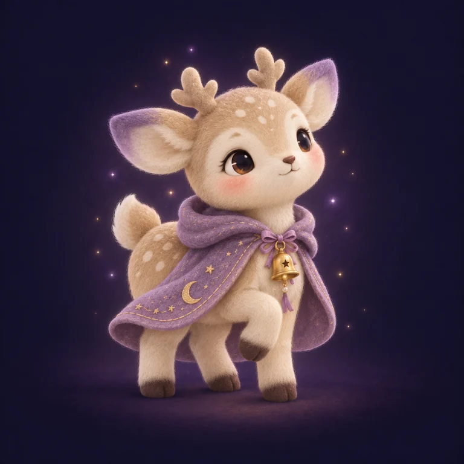
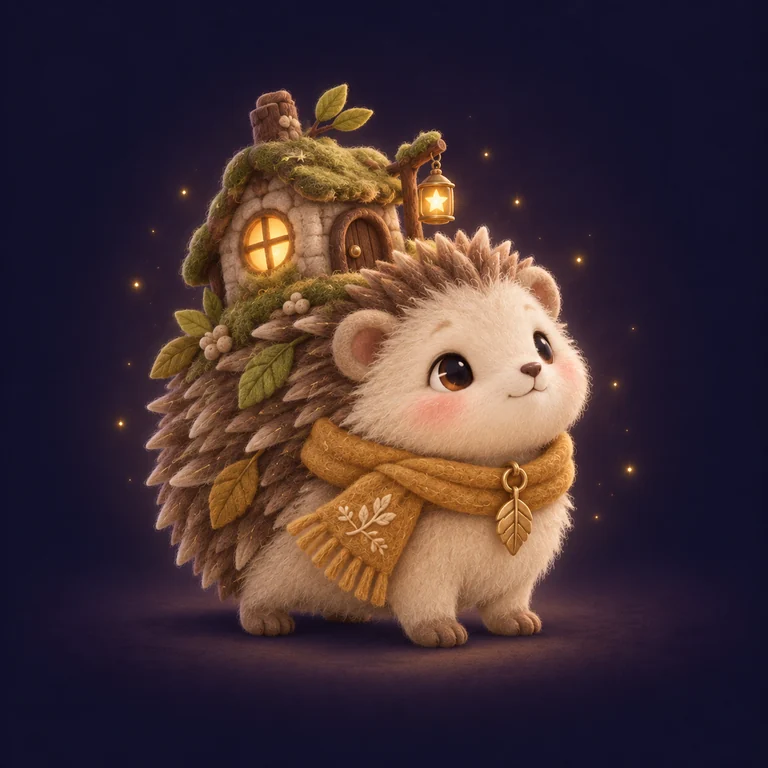
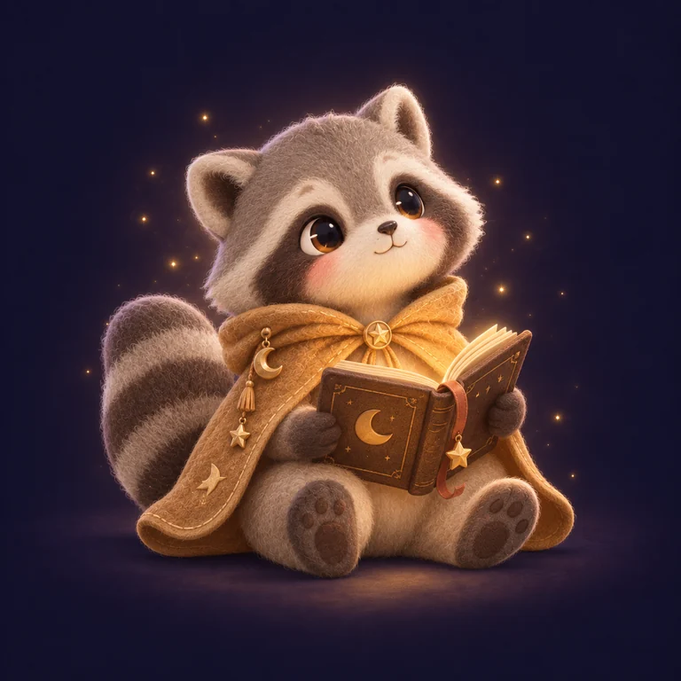
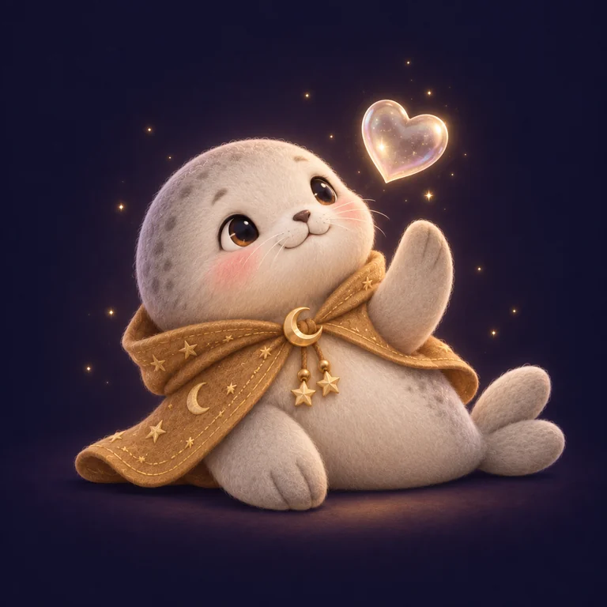

 ミモMimo 喪失系 · 思い出の収集家 大切な思い出を真珠に見立てて集めるラッコ。小さなかばんには、忘れたくない気持ちをそっとしまっている。 「大切だった気持ちも、ここに。」
 リリLili 直感警告系 · 小さな気配の聞き手 耳を澄ますのが好きなこじか。胸のベルをそっと揺らし、まだ言葉にならない気持ちに名前を探す。 「その気持ち、ゆっくり聞かせて。」
 モリMori 場所固定系 · いつもの庭の守り手 背中に小さな家をのせたはりねずみ。何度も訪れる場所に、昨日と違う葉っぱや窓の灯りを見つける。 「いつもの場所にも、新しい発見。」
 メグルMeguru 展開固定系 · めぐる物語のしおり番 輪のしおりを持つあらいぐま。何度も開く物語でも、小さな違いを見つけるたびにページを大切にめくる。 「同じお話にも、今日の一行。」
 ココCoco 感情固定系 · 気持ちの波の友だち ハートの泡を見つめるあざらし。繰り返し訪れる気持ちにも、その日の色を見つけてそっと寄り添う。 「今日の気持ちは、何色かな。」